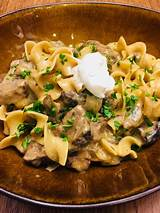

Stroganoff

Description
There will be content here
There will be more content here
Ingredients
- 1 lb top sirloin steak, thinly sliced into strips
- 2 tbsp of olive oil
- 2 tbsp of unsalted butter
- 1/2 medium onion, finely chopped
- 1/2 lb of brown mushrooms, thickly sliced
- 1 garlic clove, minced
- 1 tbsp all-purpose flour
- 1 cup of beef broth
- 3/4 cup of heavy whipping cream
- 1/4 cup of sour cream
- 1 tbsp of Worcestershire sauce>
- 1/2 tsp of dijon mustard
- 1/2 tsp salt
- 1/4 tsp black pepper
Steps
- Place a large deep pan or dutch oven over medium-high heat. Add 2 Tbsp oil and once oil is very hot, add thinly
sliced beef strips in a single layer, cooking 1 minute per side without stirring. Cook until just browned and no
longer red. Sear beef in 2 batches so you don't overcrowd the pan. Remove beef to a plate and cover to keep
warm.
- Add 2 Tbsp butter, chopped onion and sliced mushrooms. Sautee 6-8 minutes or until liquid has evaporated and
onions and mushrooms are soft and lightly browned.
- Add 1 minced garlic clove and sautee 1 minute until fragrant. Add 1 Tbsp flour and sautee another minute
stirring constantly.
- Pour in 1 cups beef broth, scraping any bits from the bottom of the pan then add 3/4 cup whipping cream and
simmer another 1 to 2 minutes or until slightly thickened.
- Stir a few Tablespoons of the sauce into 1/4 cup of sour cream to temper it so the sour cream doesn’t curdle
then add it to the pan while stirring constantly.
- Stir in 1 Tbsp Worcestershire, 1/2 tsp dijon mustard, and season with 1/2 tsp salt and 1/4 tsp pepper, or season
to taste and continue simmering until sauce is creamy. Add beef with any accumulated juices back to the pan and
bring just to a simmer or until beef is heated through.
Return to main page